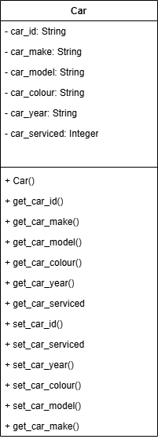

Technical Explanation
This program applies standard algorithms to an array of objects. Car records are read from CSV into `Car` objects, then sorted by make using Bubble Sort, and searched using Binary Search. This demonstrates how algorithm logic can be adapted from primitive values to object data accessed via getter methods.
Analysis
### End User Requirements
1. The user wants car records loaded from file into object form.
2. The user wants records sorted by make.
3. The user wants to search quickly for a car make.
4. The user wants a clear available/not available result.
### Functional Requirements
#### Advanced Higher concepts
The solution is required to:
FR1 Define a class for car records.
FR2 Store records in an array of objects.
FR3 Sort object array by a selected field using a class getter method.
FR4 Search sorted object array using Binary Search.
#### Integration
The solution is required to:
FR5 Read external CSV data and convert rows to objects.
FR6 Output unsorted and sorted make lists.
FR7 Return and display search outcome.
#### Additional functional requirements
The solution is required to:
FR8 Keep read, sort, and search as separate functions.
FR9 Compare object properties consistently.
FR10 Handle not-found case robustly.
---
Design
### Data Structure Design
- Use an object array to store `Car` records read from CSV.
- Each `Car` object keeps strongly typed values for key fields:
- `car_year` stored as an Integer
- `car_serviced` stored as a Boolean
- Setter validation ensures invalid year or service-status data is rejected.
- Sorting and searching compare car make values through getter methods.

### English Pseudocode Constructor: Car() 1. Accept id, make, model, colour, year and serviced values. 2. Store id, make, model and colour as strings. 3. Call `set_car_year()` to validate and store the year. 4. Call `set_car_serviced()` to validate and store serviced status. Method: get_car_make() 1. Read the make stored in the object. 2. Return that make. Method: get_car_year() 1. Read the year stored in the object. 2. Return that integer year. Method: get_car_serviced() 1. Read the serviced flag stored in the object. 2. Return that boolean value. Method: set_car_year() 1. Accept a new year value. 2. Check that it can be converted to an integer. 3. Check the year is within valid range. 4. Store the validated integer year. Method: set_car_serviced() 1. Accept a new serviced value. 2. If it is already boolean, store it directly. 3. Otherwise, normalize text and check accepted true/false values. 4. Store as boolean when valid, otherwise reject input. Function: readFileToArrayOfObjects() 1. Open the car CSV file and read all lines. 2. For each line, split fields by comma. 3. Create a `Car` object from fields. 4. Add the object to the car array. 5. Return the populated object array. Function: bubbleSortArrayofObjects() 1. Set working length and swapped flag. 2. Repeat passes while swaps occur. 3. Compare adjacent objects by `get_car_make()`. 4. Swap full objects when out of order. 5. Reduce active length after each pass. 6. Return sorted object array. Function: binarySearch() 1. Set low and high bounds for the sorted array. 2. While target not found and bounds are valid: 3. Calculate midpoint. 4. Compare target with midpoint `get_car_make()`. 5. Move lower or upper bound accordingly. 6. Return found index, or `-1` if not found. ### Array of Objects Design (Plain English) - Think of the data as a shelf of car objects, where each object has multiple properties. - Before sorting, objects are loaded in file order. - Sorting rearranges full objects based on one chosen property (make). - Searching checks that same property in the middle object, then halves the search region. - Validation happens when values are set, so incorrect year/service values do not enter the object. ---Implementation
[Program 18 - Standard Algorithms on Array of Objects.py](./Program%2018%20-%20Standard%20Algorithms%20on%20Array%20of%20Objects.py)
SQA-RL:
```text
CLASS Car
DECLARE car_id : STRING
DECLARE car_make : STRING
DECLARE car_model : STRING
DECLARE car_colour : STRING
DECLARE car_year : INTEGER
DECLARE car_serviced : BOOLEAN
PROCEDURE Car(newID, newMake, newModel, newColour, newYear, newServiced)
SET car_id TO STRING(newID)
SET car_make TO STRING(newMake)
SET car_model TO STRING(newModel)
SET car_colour TO STRING(newColour)
CALL set_car_year(newYear)
CALL set_car_serviced(newServiced)
END PROCEDURE
PROCEDURE set_car_year(newYear)
IF IS_INTEGER(newYear) = FALSE THEN
RAISE ERROR "car_year must be an integer"
END IF
IF INTEGER(newYear) < 1886 OR INTEGER(newYear) > 2100 THEN
RAISE ERROR "car_year must be between 1886 and 2100"
END IF
SET car_year TO INTEGER(newYear)
END PROCEDURE
PROCEDURE set_car_serviced(newServiced)
IF TYPE(newServiced) = BOOLEAN THEN
SET car_serviced TO newServiced
ELSE IF LOWERCASE(TRIM(STRING(newServiced))) IN ["true","1","yes","y"] THEN
SET car_serviced TO TRUE
ELSE IF LOWERCASE(TRIM(STRING(newServiced))) IN ["false","0","no","n"] THEN
SET car_serviced TO FALSE
ELSE
RAISE ERROR "car_serviced must be a boolean or boolean-like string"
END IF
END PROCEDURE
END CLASS
SET carArray <- readFileToArrayOfObjects()
SET sortedArray <- bubbleSortArrayofObjects(carArray)
INPUT targetMake
SET position <- binarySearch(sortedArray, targetMake)
IF position = -1 THEN
OUTPUT "Sorry, we don't have any of that make."
ELSE
OUTPUT "Yes! We have that make of car!"
END IF
```
---
Python Code
class Car():
#define the structure and content of the City Record
def __init__( self, car_id,car_make,car_model,car_colour,car_year,car_serviced ):
self.car_id = str(car_id) #String
self.car_make = str(car_make) #String
self.car_model = str(car_model) #String
self.car_colour = str(car_colour) #String
self.set_car_year(car_year) #Integer
self.set_car_serviced(car_serviced) #Boolean
def get_car_id(self):
return self.car_id
def get_car_make(self):
return self.car_make
def get_car_model(self):
return self.car_model
def get_car_colour(self):
return self.car_colour
def get_car_year(self):
return self.car_year
def get_car_serviced(self):
return self.car_serviced
def set_car_make(self, car_make):
self.car_make = str(car_make)
def set_car_model(self, car_model):
self.car_model = str(car_model)
def set_car_colour(self, car_colour):
self.car_colour = str(car_colour)
def set_car_year(self, car_year):
try:
year = int(car_year)
except (TypeError, ValueError):
raise ValueError("car_year must be an integer")
if year < 1886 or year > 2100:
raise ValueError("car_year must be between 1886 and 2100")
self.car_year = year
def set_car_serviced(self, car_serviced):
if isinstance(car_serviced, bool):
self.car_serviced = car_serviced
return
if isinstance(car_serviced, str):
value = car_serviced.strip().lower()
if value in ("true", "1", "yes", "y"):
self.car_serviced = True
return
if value in ("false", "0", "no", "n"):
self.car_serviced = False
return
raise ValueError("car_serviced must be a boolean or boolean-like string")
def readFileToArrayOfObjects():
cArray = []
entireFile = open ( "dataFiles/carData.csv" , "r" )
#this file needs to be in the same folder as the program
linesArray = entireFile.read().splitlines()
entireFile.close()
for line in linesArray:
lineSplit = line.split( "," )
currentCar = Car(lineSplit[0], lineSplit[1], lineSplit[2],lineSplit[3],lineSplit[4],lineSplit[5])
cArray.append(currentCar)
return cArray
def bubbleSortArrayofObjects(cArray):
n = len(cArray)
swapped = True
while swapped and n>=0:
swapped = False
for i in range(0,n-1): #changed from algorithm (n-2)
if cArray[i].get_car_make() > cArray[i+1].get_car_make():
temp = cArray[i]
cArray[i] = cArray [i+1]
cArray[i+1] = temp
swapped = True
n = n-1
return cArray
def binarySearch(cA, target):
low = 0
high = len(cA)-1
mid = 0
found = False
position = -1
while not(found) and low <= high:
mid = int((low + high)/2)
if target == cA[mid].get_car_make():
position = mid
found = True
elif target >= cA[mid].get_car_make():
low = mid + 1
else:
high = mid - 1
return position
carArray = readFileToArrayOfObjects()
print ("*Unsorted Array*")
for cars in range (0,len(carArray)):
print (carArray[cars].get_car_make())
sortedArray = bubbleSortArrayofObjects(carArray)
print ("*Sorted Array*")
for cars in range (0,len(carArray)):
print (carArray[cars].get_car_make())
target = str(input("What make of car are you looking for? "))
position = binarySearch(sortedArray, target)
if position == -1:
print ("Sorry, we don't have any of that make.")
else:
print ("Yes! We have that make of car!")
Test Plan
| Test Case | Input | Expected Output | Evidence |
|---|---|---|---|
| CSV load | `carData.csv` | Array of `Car` objects populated | Before: empty / After: objects loaded |
| Sort by make | Unsorted object array | Makes in ascending order | Before: unsorted / After: sorted |
| Search existing make | target in sorted array | Found index != -1 | Before: unknown / After: found |
| Search missing make | target not in array | -1 and not-available message | Before: unknown / After: not found |
| Case sensitivity check | mixed input casing | Documented behavior (exact/normalized) | Before: unclear / After: defined behavior |